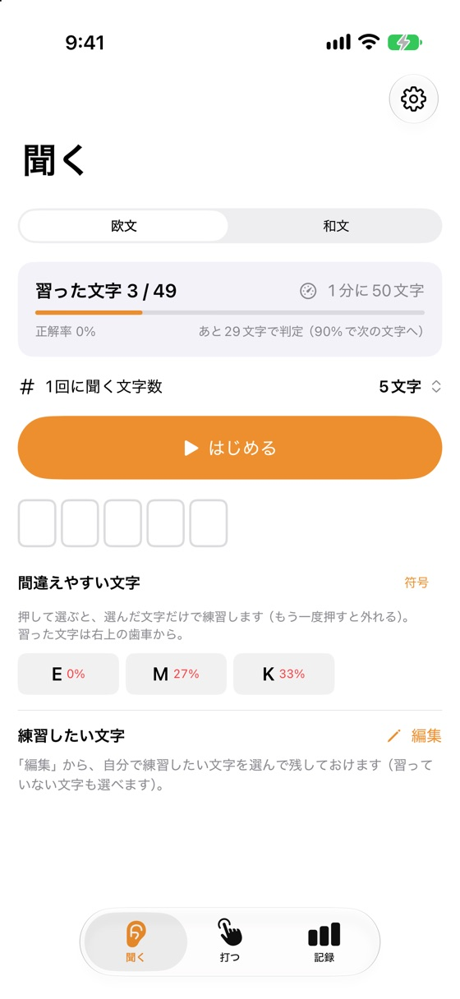
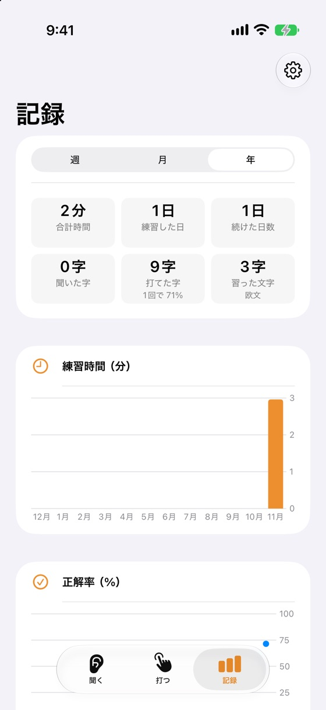

FEATURES
できること
聞く（Koch法）
2文字から始め、正解率90%で1文字ずつ増える。文字の間だけあけてゆっくりにもできます（Farnsworth）。
聞きながら答える
いつものキーボード（フリック入力も）で答えて、最後に答え合わせ。聞くだけもできます。
打つ（縦振り・パドル）
画面が電鍵に。縦振りは、あなたの打つ速さに自動で合わせて読み取ります。
聞き取る（プラス）
まわりで鳴っているモールスをマイクで聞き取って文字に。外の電鍵や無線の音で打つ練習の答えにも。
SCREENS
画面



PRICE
値段
無料
¥0
- 聞く・打つの練習（欧文・和文）
- 1回1〜100文字、苦手な文字だけの練習
- 覚える順（いろは順・五十音順・Koch順など）
プラス
¥600（買い切り）
- マイクで聞き取る
- 記録のグラフ・文字ごとの正解率
- 広告が消える
2026年12月13日までに入れた方へ
2026年12月13日までにこのアプリを入れた方は、買わなくてもずっと全部無料で使えます（広告も出ません）。
2026年12月13日までにこのアプリを入れた方は、買わなくてもずっと全部無料で使えます（広告も出ません）。
FAQ
よくある質問
符号はどこの決まりに基づいていますか？
日本の法令「無線局運用規則」別表第一号「モールス符号」（和文・欧文）です。欧文は国際的なモールス符号（ITU-R M.1677-1）と同じです。和文の「？」は表に無いため、欧文の問符と同じ符号を使っています。アプリの設定の「符号の出典」に詳しく書いています。
和文の濁点や段落はどう入れますか？
濁点・半濁点は「が→カ゛」のように分けて数えます。「が」と打っても、キーボードの上の ゛ を足してもかまいません。段落（改行）は ↵、ヰ・ヱ もキーボードの上から入れられます。
無線を聞き取って文字にしてもいいですか？
聞いて文字にすること自体はできますが、他人の無線通信の内容を、ほかの人に漏らしたり使ったりすることは電波法第59条で禁じられています。練習や自分の通信の確認に使ってください。
マイクの音は録音されますか？
いいえ。音はiPhoneの中で文字にするためだけに使い、保存も送信もしません。
SUPPORT
サポート
不具合・ご要望・ご質問は、メールでお知らせください。
お使いのiPhoneの機種・iOSのバージョン・アプリのバージョン（アプリの設定のいちばん下のバージョン）を書いていただけると、早く調べられます。